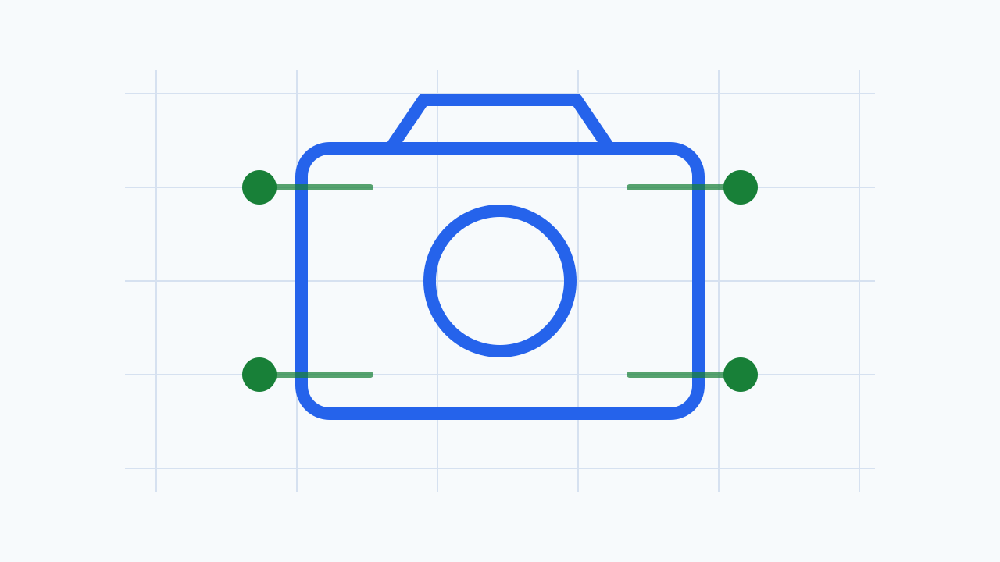

Camera HAL SW Newsletter
이번 주 뉴스레터는 Android 17 베타 4 출시와 함께 Camera HAL의 플랫폼 호환성 및 안정성 검증의 중요성을 강조합니다. 또한, Android의 하이브리드 AI 추론 및 새로운 Gemini 모델 지원이 카메라 데이터 경로와 NPU/GPU 스케줄링에 미칠 영향에 대해 다룹니다. C++ 관점에서는 GPU 가속화에 표준 C++를 활용하는 방안과 HAL 코드의 성능 및 동시성 최적화를 위한 기법들을 살펴봅니다.
1. 이번 주 3줄 브리핑
- Android 17 Beta 4 출시로 Camera HAL은 최종 플랫폼 안정성 및 호환성 검증에 집중해야 합니다.
- Android의 하이브리드 AI 추론 및 Gemini 모델 지원은 카메라 HAL의 AI 워크로드 처리 방식과 NPU/GPU 리소스 관리에 변화를 요구합니다.
- C++ 가상 함수 최적화 및 아토믹 객체 활용은 카메라 HAL의 네이티브 코드 성능과 멀티스레드 안정성을 강화하는 데 기여할 수 있습니다.
2. Android Platform

Android 17 Beta 4 출시: 플랫폼 안정성 및 앱 호환성 최종 점검
- Android 17 Beta 4가 출시되었다.
- 이것은 릴리스 사이클의 마지막 예정된 베타 버전이다.
- 앱 호환성 및 플랫폼 안정성을 위한 중요한 이정표이다.
- 개발자들은 거의 최종 환경에서 앱, 라이브러리, 도구, 게임 엔진을 테스트해야 한다.
Android 플랫폼의 베타 릴리스는 새로운 기능 도입과 함께 기존 API의 변경, 시스템 동작의 미세 조정이 이루어지는 기간입니다. 베타 4는 일반적으로 최종 안정화 단계에 진입했음을 의미하며, OEM 및 앱 개발자는 이 버전을 기준으로 최종 호환성 테스트를 수행합니다.
HAL interface: Android 17에서 도입된 새로운 Camera HAL API 또는 기존 API의 변경 사항이 있는지 최종 확인해야 합니다. CTS/VTS/Camera ITS: Beta 4 기준으로 업데이트된 CTS/VTS/Camera ITS 테스트 케이스를 통과하는지 검증해야 합니다. 특히 Camera ITS는 이미지 품질 및 일관성을 중점적으로 다루므로 중요합니다. Stream configuration: 새로운 스트림 조합 또는 기존 스트림 조합에 대한 성능 저하, 메모리 누수, 프레임 드롭 등의 문제가 없는지 확인해야 합니다. Request/result metadata: Android 17에서 추가되거나 변경된 메타데이터 필드가 HAL에서 올바르게 처리되고 노출되는지 검증해야 합니다. Compatibility: CameraX와 같은 상위 레벨 라이브러리 및 주요 카메라 앱들이 Beta 4 환경에서 HAL과 문제없이 동작하는지 확인해야 합니다.
- Android 17 Beta 4가 설치된 기기에서 최신 Camera ITS 테스트를 전체 수행하고, 실패 항목을 분석하여 HAL 수정 필요 여부를 판단합니다. (담당: [팀명], 기한: 2주 이내)
- Android 17 CDD(Compatibility Definition Document) 초안을 검토하여 Camera HAL 관련 새로운 요구사항이나 변경된 동작이 있는지 확인하고, 필요한 경우 구현 계획을 수립합니다. (담당: [팀명], 기한: 2주 이내)
Android 17 Beta 4는 플랫폼 안정화의 마지막 단계입니다. HAL 팀은 최신 CTS/VTS/Camera ITS를 통과하고, CDD 변경 사항을 확인하여 최종 호환성을 확보해야 합니다.
3. AI / Android Camera

Android 하이브리드 추론 및 새로운 Gemini 모델 지원으로 카메라 AI 워크로드 변화 예고
- 하이브리드 추론을 위한 새로운 Firebase API가 출시되었다.
- 이 API는 온디바이스 및 클라우드 추론을 모두 활용한다.
- 새로운 Gemini 모델(최신 Nano Banana 모델 포함)이 Android에서 지원된다.
- Nano Banana 모델은 이미지 생성에 사용된다.
온디바이스 AI는 지연 시간 감소, 개인 정보 보호 강화, 오프라인 작동 등의 이점이 있지만, 모델 크기와 컴퓨팅 리소스 제약이 있습니다. 클라우드 AI는 더 강력한 모델을 사용할 수 있지만, 네트워크 지연과 데이터 전송 비용이 발생합니다. 하이브리드 추론은 이 두 가지 접근 방식의 장점을 결합하여 최적의 AI 워크로드를 제공하려는 시도입니다.
Camera data path: AI 모델이 카메라 HAL에서 제공하는 YUV 또는 PRIVATE 스트림을 직접 소비할 가능성이 높아집니다. 이 경우, HAL은 AI 모델의 입력 요구사항(해상도, 형식, 전처리)에 맞춰 효율적인 버퍼 제공 및 관리를 보장해야 합니다. NPU/GPU scheduling: 온디바이스 추론이 활성화될 때, 카메라 ISP/NPU/GPU 리소스 간의 경합이 발생할 수 있습니다. HAL은 카메라 파이프라인과 AI 추론 간의 리소스 스케줄링 및 우선순위 관리에 대한 새로운 요구사항에 직면할 수 있습니다. Performance/Thermal: 하이브리드 추론은 온디바이스 추론 시 높은 컴퓨팅 부하를 유발할 수 있으며, 이는 카메라 캡처 지연 시간 증가, 프레임 드롭, 기기 발열로 이어질 수 있습니다. HAL은 이러한 시나리오에서 성능 및 열 관리를 최적화해야 합니다. Stream configuration: AI 워크로드에 특화된 새로운 스트림 구성 또는 기존 스트림의 확장된 사용 패턴이 나타날 수 있습니다. HAL은 이러한 요구사항을 지원할 수 있는지 검토해야 합니다.
- Firebase AI Logic을 사용하는 샘플 앱을 통해 Preview + AI-analysis stream 조합에서 온디바이스 추론 시나리오의 frame drop, capture latency, thermal throttling을 측정하고 baseline을 확보합니다. (담당: [팀명], 기한: 2주 이내)
- 새로운 Gemini Nano Banana 모델의 이미지 입력 요구사항(해상도, 색 공간, 전처리 필요 여부)을 파악하고, Camera HAL이 해당 포맷의 버퍼를 효율적으로 제공할 수 있는지 검토합니다. (담당: [팀명], 기한: 2주 이내)
Android의 하이브리드 AI 추론 및 Gemini 모델 지원은 카메라 HAL이 AI 워크로드를 위한 이미지 데이터를 효율적으로 제공하고 NPU/GPU 리소스를 관리하는 방식에 중요한 변화를 가져올 것입니다. 성능 및 리소스 경합 관리에 집중해야 합니다.
4. C++ / NPU/GPU

표준 C++를 이용한 GPU 가속화 가능성 논의: 카메라 HAL의 NPU/GPU 활용 전략에 미치는 영향
- CppCon 2025에서 Elmar Westphal이 표준 C++로 CUDA를 대체하는 GPU 가속화에 대해 발표했다.
- 발표는 표준 C++를 통한 GPU 고성능 컴퓨팅 가능성을 탐구한다.
CUDA는 NVIDIA GPU를 위한 병렬 컴퓨팅 플랫폼 및 프로그래밍 모델로, GPU 가속화 분야에서 사실상의 표준으로 자리 잡았습니다. 그러나 CUDA는 특정 벤더에 종속적이며, 이식성(portability)에 제약이 있습니다. 표준 C++를 통한 GPU 가속화는 벤더 종속성을 줄이고 더 넓은 하드웨어 생태계에서 고성능 컴퓨팅을 가능하게 하는 잠재력을 가집니다.
NPU/GPU: 카메라 HAL은 이미지 처리 파이프라인(노이즈 감소, 샤프닝, 색 보정 등) 및 AI 전처리/추론을 위해 NPU/GPU를 적극적으로 활용합니다. 표준 C++ 기반의 GPU 가속화는 이러한 작업의 구현 방식을 변화시킬 수 있습니다. C++ code quality: 벤더별 확장 대신 표준 C++를 사용하면 코드의 가독성, 유지보수성, 테스트 용이성이 향상될 수 있습니다. 이는 장기적으로 HAL 코드베이스의 안정성에 기여합니다. Toolchain: Clang/LLVM 기반의 Android 빌드 시스템에서 표준 C++ GPU 가속화 기능이 얼마나 잘 지원될지, 그리고 어떤 컴파일러 플래그나 라이브러리가 필요할지 모니터링해야 합니다. Performance optimization: 표준 C++ 기반 솔루션이 기존 벤더별 솔루션과 비교하여 성능(처리량, 지연 시간, 전력 효율) 측면에서 경쟁력을 가질 수 있는지 평가해야 합니다.
- 표준 C++ 병렬 알고리즘(예: `std::for_each`, `std::transform`의 병렬 버전)을 사용하여 간단한 이미지 처리 필터(예: 그레이스케일 변환)를 구현하고, 기존 GPU 가속 코드와 성능(처리 시간, CPU/GPU 부하)을 비교하는 PoC를 수행합니다. (담당: [팀명], 기한: 2주 이내)
- Android NDK의 최신 Clang/LLVM 툴체인에서 C++ 표준 병렬 라이브러리 지원 현황 및 GPU 오프로딩 가능성을 조사하고, 관련 문서 및 예제를 수집합니다. (담당: [팀명], 기한: 2주 이내)
표준 C++를 통한 GPU 가속화는 카메라 HAL의 NPU/GPU 활용 방식에 장기적인 변화를 가져올 수 있는 중요한 기술 동향입니다. 벤더 종속성을 줄이고 코드 품질을 향상시킬 잠재력이 있으므로, 기술 발전을 모니터링하고 초기 PoC를 통해 가능성을 탐색해야 합니다.
5. C++ Performance

C++ 가상 함수 호출 최적화: Devirtualization과 정적 다형성으로 카메라 HAL 성능 향상
- David Álvarez Rosa가 가상 함수 호출의 성능 영향과 Devirtualization, 정적 다형성 기법을 설명했다.
- 가상 함수 호출은 다형성을 가능하게 하지만, 숨겨진 오버헤드가 있다.
C++의 가상 함수는 런타임 다형성을 구현하는 강력한 메커니즘이지만, 가상 테이블 조회(vtable lookup) 및 간접 호출(indirect call)로 인해 직접 함수 호출보다 약간의 오버헤드가 발생합니다. 성능에 민감한 코드에서는 이러한 작은 오버헤드도 누적되어 전체 시스템 성능에 영향을 미칠 수 있습니다. Devirtualization은 컴파일러가 런타임에 결정될 가상 함수 호출을 컴파일 타임에 결정하여 직접 호출로 바꾸는 최적화 기법입니다. 정적 다형성은 템플릿(CRTP 등)을 사용하여 런타임 오버헤드 없이 다형성을 구현하는 방법입니다.
Native Android runtime: Camera HAL은 C++로 구현되며, Android의 네이티브 런타임 환경에서 동작합니다. HAL 코드 내의 가상 함수 호출은 캡처 지연 시간, 프레임 처리량에 직접적인 영향을 미칠 수 있습니다. C++ code quality: HAL 인터페이스 구현 시 추상화 계층에서 가상 함수를 사용하는 경우가 많습니다. 성능 크리티컬 경로에서 이러한 패턴을 식별하고, Devirtualization이 가능한지 또는 정적 다형성으로 리팩토링할 수 있는지 검토해야 합니다. Performance optimization: 이미지 버퍼 처리 루틴, 메타데이터 파싱/생성 루틴 등 반복적이고 성능이 중요한 코드 섹션에서 가상 함수 오버헤드를 줄이는 것은 전체 카메라 파이프라인의 효율성을 높이는 데 기여합니다. Toolchain: Clang/LLVM 컴파일러가 Devirtualization을 얼마나 효과적으로 수행하는지 이해하고, 필요한 경우 컴파일러 최적화 옵션을 조정하거나 코드 패턴을 변경하여 최적화를 유도해야 합니다.
- Camera HAL의 주요 이미지 처리 경로(예: `processCaptureRequest`, `processCaptureResult` 내부)에서 `perf` 또는 `simpleperf`와 같은 프로파일링 도구를 사용하여 가상 함수 호출로 인한 오버헤드가 발생하는지 분석합니다. (담당: [팀명], 기한: 2주 이내)
- 성능에 민감한 특정 모듈에서 가상 함수를 사용하는 인터페이스를 정적 다형성(예: CRTP)으로 리팩토링하는 PoC를 수행하고, 리팩토링 전후의 성능(함수 호출 시간, CPU 사용량)을 비교 측정합니다. (담당: [팀명], 기한: 2주 이내)
C++ 가상 함수 호출 오버헤드는 카메라 HAL 성능에 영향을 줄 수 있습니다. Devirtualization 및 정적 다형성 기법을 통해 성능 크리티컬 경로를 최적화하여 HAL의 효율성을 높일 수 있는지 검토해야 합니다.
6. C++ Concurrency

C++ Atomics 직접 구현 논의: 카메라 HAL의 멀티스레드 동시성 및 메모리 안전성 강화
- CppCon 2025에서 Ben Saks가 C++ Atomics 직접 구현에 대해 발표했다.
- 아토믹 객체는 멀티스레드 환경에서 매우 유용하다.
멀티스레드 프로그래밍에서 공유 데이터에 대한 동시 접근은 데이터 경쟁(data race)을 유발하여 예측 불가능한 동작이나 프로그램 충돌로 이어질 수 있습니다. C++ 표준 라이브러리의 `std::atomic`은 이러한 문제를 해결하기 위해 아토믹 연산을 제공하여, 여러 스레드가 동시에 접근하더라도 데이터 무결성을 보장합니다. `std::atomic`은 일반적으로 하드웨어 아토믹 명령어를 활용하여 효율성을 높입니다.
Concurrency: 카메라 HAL은 여러 스레드에서 동시에 `request`를 처리하고 `result`를 반환하며, 버퍼를 관리합니다. `std::atomic`은 이러한 공유 상태 변수를 안전하게 업데이트하는 데 필수적입니다. Memory safety: 버퍼 카운터, 스트림 상태 플래그 등 HAL 내부의 공유 변수에 대한 아토믹 연산은 메모리 손상이나 경쟁 조건을 방지하여 시스템 안정성을 보장합니다. Native Android runtime: Android NDK를 통해 빌드되는 HAL 코드에서 `std::atomic`의 동작과 성능은 매우 중요합니다. 특정 아키텍처(ARM)에서의 아토믹 명령어 매핑 및 메모리 오더링에 대한 이해가 필요할 수 있습니다. C++ code quality: `std::atomic`을 직접 구현하는 것은 복잡하고 오류 발생 가능성이 높지만, 특정 성능 요구사항이나 플랫폼 제약이 있을 경우 고려될 수 있습니다. HAL 개발자는 표준 라이브러리 구현의 한계를 이해하고, 필요한 경우에만 직접 구현을 검토해야 합니다.
- Camera HAL 코드에서 `std::atomic`을 사용하는 모든 공유 변수와 해당 메모리 오더링(예: `memory_order_acquire`, `memory_order_release`) 설정을 검토하여 데이터 경쟁 가능성을 최소화하고 올바른 동기화가 이루어지는지 확인합니다. (담당: [팀명], 기한: 2주 이내)
- `std::atomic` 대신 뮤텍스(mutex)로 보호되는 공유 카운터 또는 플래그 중 `std::atomic`으로 대체하여 동시성 오버헤드를 줄일 수 있는 후보를 식별하고, PoC를 통해 성능 개선 효과를 측정합니다. (담당: [팀명], 기한: 2주 이내)
C++ 아토믹 객체는 카메라 HAL의 멀티스레드 환경에서 데이터 무결성과 안정성을 보장하는 데 필수적입니다. `std::atomic`의 올바른 사용과 성능 특성을 이해하고, 필요한 경우 직접 구현 가능성을 검토하여 HAL 코드의 동시성 및 메모리 안전성을 강화해야 합니다.
이번 주 Action Items
- Android 17 Beta 4가 설치된 기기에서 최신 Camera ITS 테스트를 전체 수행하고, 실패 항목을 분석하여 HAL 수정 필요 여부를 판단합니다. (담당: [팀명], 기한: 2주 이내)
- Firebase AI Logic을 사용하는 샘플 앱을 통해 Preview + AI-analysis stream 조합에서 온디바이스 추론 시나리오의 frame drop, capture latency, thermal throttling을 측정하고 baseline을 확보합니다. (담당: [팀명], 기한: 2주 이내)
- 표준 C++ 병렬 알고리즘을 사용하여 간단한 이미지 처리 필터를 구현하고, 기존 GPU 가속 코드와 성능을 비교하는 PoC를 수행합니다. (담당: [팀명], 기한: 2주 이내)
- Camera HAL의 주요 이미지 처리 경로에서 프로파일링 도구를 사용하여 가상 함수 호출로 인한 오버헤드가 발생하는지 분석합니다. (담당: [팀명], 기한: 2주 이내)
- Camera HAL 코드에서 `std::atomic`을 사용하는 모든 공유 변수와 해당 메모리 오더링 설정을 검토하여 데이터 경쟁 가능성을 최소화하고 올바른 동기화가 이루어지는지 확인합니다. (담당: [팀명], 기한: 2주 이내)